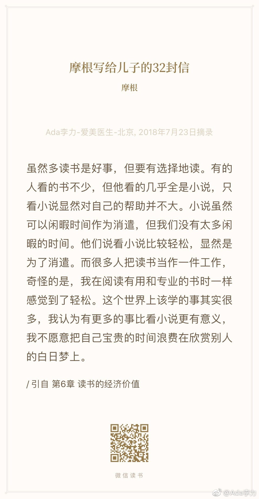

给#姣姣#发了这个视频，想让她知道星座之类基本是胡说，可以用来当谈资和八卦，但用来判断人就太傻了。 姣姣还是认为星座挺准的，我请她举几个例子。 她说妈妈你是白羊座吧，你容易冲动，你脾气也很大，你还很少女心。 我问那你的天蝎座呢，觉得哪点准？姣姣说：“记仇”@秒拍:【科普：为什么星座命理这么受欢迎？】白羊座冲动、处女座完美主义、天秤座犹豫、天蝎座记仇……很多人对于星座都有一个特定印象。那么，星座命理到底为什么这么受欢迎？这背后其实隐藏着三个有趣的心理学现象@柴知道 秒拍 柴知道的秒拍视频 552万次播放 03:55
再次应验了呢。//@龚文祥:创业者要么打工，要么自己控股小规模的创业。身边做小股东创业从未见过有好下场的。 @龚文祥:最近身边又有几个电商界大牛人物创业被出局：电商界顶尖高手，和有钱传统企业老板合伙，任操盘手工资只拿几千的生活费，自己投入几十万占小股，项目还有近千万美元融资，但最后的结局全部是被清除出局一无所获。所以建议电商创业者要么打工，要么控股小规模创业。身边做小股东创业从未见过有好下场的。
#读书#要有选择。“读小说是欣赏别人的白日梦”这个观点有趣。有另外一种观点是小说可以让人更了解人性。不过我现在觉得，商业社会里遇到的形形色色的大活人，就足够让人琢磨人性了，不需要通过小说。这大概也是我不再喜欢看小说的原因之一。 